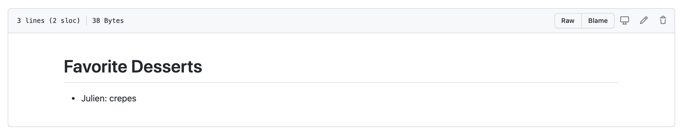
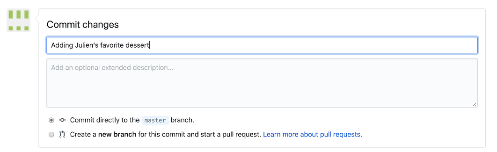
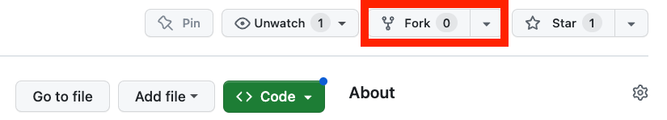

![]()

Using the GitHub website
git
github
version-control
reproducible-science
In this section, we will be using the GitHub.com website and demonstrate that you do not need to be a programmer to use version control and edit files on GitHub.
Don’t have a GitHub account?
If you have not already created a GitHub username, please do so now:
- GitHub: https://github.com
- Follow optional advice on choosing your username
Collaborator Workflow
Our asks
As a Team of two
- Help each other, everyone is bringing different skills! Talk it out!
- Listen to each other; avoid judgment and solutioneering.
- Have fun!
Prompt
We want to log the information about people’s favorite desserts using a repository.
Person 1 (owner):
- Create a repository using the following instructions steps 1-6

- Edit the README to:
- Replace the title (first line starting with
#) with something better! MaybeFavorite Desserts - Add your name and your favorite dessert below the title: e.g.
- Julien: crepes
- Replace the title (first line starting with
- Add Person 2 as a collaborator following these instructions
Person 2 (collaborator):
- Check your email to accept the invitation
- Go to the repository website (link is provided in the invitation)
- Start editing the
README.mdby clicking on the pen at the top of the README.md file to edit it
- Add your name and your favorite dessert below the title: e.g.
- Sophia: chocolate - Click Commit changes
- Add a descriptive commit message, “add my favorite dessert”

- Click Commit changes to confirm
Person 1: add a csv file
Download this csv file about the most iconic desserts in America (according to this website https://www.eatthis.com/iconic-desserts-united-states/) to your computer. Note: depending on your web browser settings you might have to right-click on the page and select Save As.
- Drag and drop it on the Github web page of your repository to upload it
- Add a short message about the file e.g.
Add iconic_desserts.csv& hitCommit changes - Your file has been uploaded 🪄. Click on the filename to see it!
You should have something similar to this repo: https://github.com/brunj7/favorite-desserts
Person 2: add an R script
This is the script we used to scrape the iconic desserts listing:
library(tidyverse)
library(rvest) # use to scrape website content
# Check if that data folder exists and create it if not
dir.create("data", showWarnings = FALSE)
# Read the webpage code
webpage <- read_html("https://www.eatthis.com/iconic-desserts-united-states/")
# Extract the desserts listing
dessert_elements<- html_elements(webpage, "h2")
dessert_listing <- dessert_elements %>%
html_text2() %>% # extracting the text associated with this type of element of the webpage
as_tibble() %>% # make it a data frame
rename(dessert = value) %>% # better name for the column
head(.,-3) %>% # 3 last ones were not desserts
rowid_to_column("rank") %>% # adding a column using the row number as proxy for the rank
write_csv("data/iconic_desserts.csv") # save it as csvHow would you add this code as an R Script to your repository?
- Copy-paste the above code to your favorite text editor
- Save the file as
iconic_desserts.R - Drag and drop it on the Github web page of your repository
Bonus
Person 2: Try to edit the csv file directly on GitHub to add your favorite dessert to the iconic list!
Person 1: Your turn!
No need to be a programmer to contribute to analytical workflows with GitHub!!
Fork Workflow
If you want to contribute to a repository that you have not been added to as a collaborator, you need to first fork the repository. This creates a linked copy under your username that you can edit. Once you are done with your contribution, you can send a request to incorporate your changes to the original repository using what is called a Pull Request, in other words, you ask the repository owner to pull your changes into their repository.
Our ask
Prompt
With another collaborator keep logging information about people’s favorite desserts using the fork workflow.
Person 2: Create a Fork of the person 1 repository
- Get the link the repository from Person 1 via the Zoom chat
- Go to their repository webpage
- Create a Fork by clicking on the Fork button on the top right view of your repository homepage

- On your Fork, start editing the
README.md - Add the name of a friend and their favorite dessert below your previous entries: e.g.
- Eliott: donut - Add a descriptive commit message
- Commit your changes
- Create a Pull Request (PR) to merge those changes to the main repository using these instructions
Person 1:
- Go to your repository and merge the PR
Citation
BibTeX citation:
@online{brun2024,
author = {Brun, Julien},
title = {Using the {GitHub} Website},
date = {2024-04-10},
url = {https://ucsb-library-research-data-services.github.io/github-4everyone/},
langid = {en}
}
For attribution, please cite this work as:
Brun, Julien. 2024. “Using the GitHub Website.” April 10,
2024. https://ucsb-library-research-data-services.github.io/github-4everyone/.